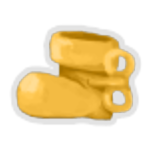
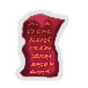

| Name | Image | Tier | Pool | Description | Flavor |
|---|
| Ceramic Disc |  | Common | | Gain 50Gold whenever you kill more than one enemy in the same turn. | It seems ready to shatter at any moment. |
| Credit Card |  | Common | | Every 7th card reward has 4 additional cards to choose from. | Earn 57.142857142% cash back on each purchase! |
| Toothpaste |  | Common | | Whenever an enemy's HP drops below 40%, apply 1Weak to them. | Minty fresh, it keeps enemies and cavities at bay. |
| Bowl of Rice |  | Uncommon | | When adding cards to your deck, you may add a random upgraded Colorless card instead. | Upon closer inspection, each grain has been meticulously glued into place. |
| Honing Steel |  | Uncommon | | Upon pickup, increase the damage of all Attacks in your deck by 2. | Keep your blade sharp, and your mind sharper. |
| Safety Bubble |  | Uncommon | | At the end of your turn, gain 1 Block for each time you've been attacked this combat. | Each time it's popped, it comes back stronger. |
| Golden Boot |  | Rare | | For every 75 gold you gain, upgrade a random card in your deck. Prevents TheBoot from spawning. | Fortune favors the boot. |
| Pandora's Shoebox |  | Rare | | At the start of each combat, Transform all basic strikes and defends in your draw pile. | Curiosity transforms the mundane into the extraordinary. |
| Party Bomb |  | Rare | | Usable once per combat. Click button to write a word containing the group of 3 letters indicated that appears anywhere in the base game. If correct, activate TheBomb. Otherwise, reduce the counter by 1. When it reaches 0, this explodes. | It's a blast—literally. |
| Demonic Pact |  | Shop | | Whenever you play an Attack, draw 1 card. Whenever you play 2Attacks in a row, lose 6 HP. | What did you expect from a pact with a Demon? |